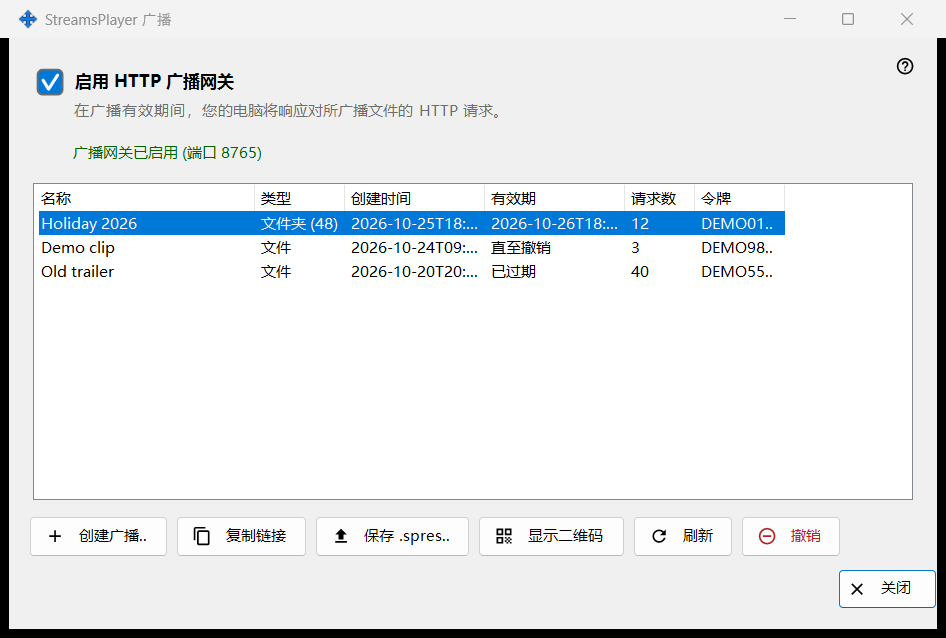
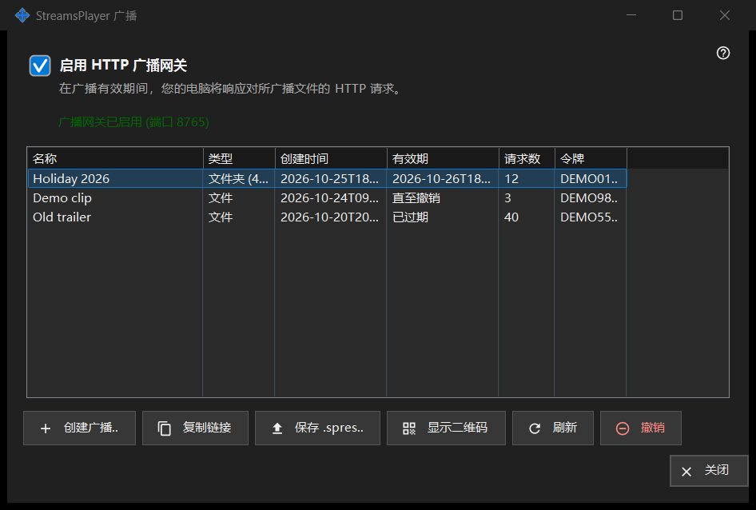

StreamsPlayer 广播
用途说明
管理此电脑向 StreamsPlayer 应用提供的媒体文件和文件夹的 HTTP 广播。它从 Share Manager 主窗口的「广播..」按钮或「添加」菜单项打开，仅当共享服务报告支持广播时才会出现。带路径启动时会打开它，并直接进入该路径的「创建广播」对话框。


操作顺序
- 勾选「启用 HTTP 广播网关」，或者直接创建广播，这会自动开启网关。
- 点击「创建广播..」，选择媒体文件，设置标题、有效期和互联网选项，然后点击「广播」。
- 链接会复制到剪贴板。
- 选中一行，使用「复制链接」、「保存 .spres..」或「显示二维码」把广播交给设备。
- 不再需要时「撤销」广播。
界面元素
网关开关
该复选框开启或关闭 HTTP 网关。其下方的一行显示「广播网关已关闭」或「广播网关已启用 (端口 N)」。网关运行时，此电脑会响应对广播文件的 HTTP 请求。如果网关无法启动（端口、防火墙），复选框会恢复到真实状态，原因显示在其下方的一行红字中；拒绝从不会弹出对话框。
广播列表
列：名称、类型（文件，或带条目数量的文件夹）、创建时间、有效期（日期、「直至撤销」或「已过期」）、请求数和令牌（只显示前六个字符）。列表每 5 秒重新读取一次。双击某一行会复制其链接。
创建广播..
请求选择一个媒体文件并打开「创建广播」对话框。你确认后，如有需要会开启网关，创建广播，并将其链接连同隐私标记复制到剪贴板；一条消息确认复制完成。
刷新和撤销
「刷新」仅适用于文件夹广播，并请求服务刷新它；一条消息确认。「撤销」适用于任何一行，并会先询问：撤销广播 X？链接将立即失效。已撤销的广播无法恢复；请创建一个新的。
页面关闭时
如果共享服务没有响应或不支持广播，页面会就地关闭，红色的一行说明原因，例如广播服务的此版本已过时，或操作未能完成且详情在日志中。